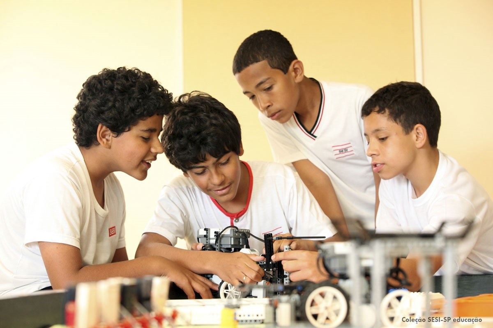
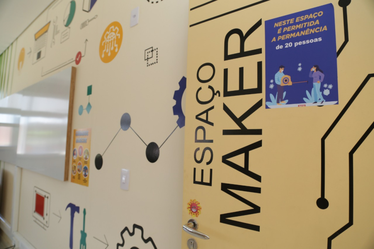

⁛SESI MANGAL⁛
Conhecendo um pouco do Sesi mangal
⁘Conheça nossos horários de funcionamento :
SECRETARIA ESCOLAR:
CE 123 Sorocaba
Segunda-feira das 8h30 às 16h -
Terça a sexta-feira das 8h30 às 16h30 »
Informações: (15) 3388-0432 / 3388-0434 / 3388-0417 / 3388-0477
» E-mail: ce123@sesisp.org.br
SECRETARIA ÚNICA:
Segunda-feira das 8h30 às 16h
- Terça à sexta-feira das 8h30 às 19h30
- Sábado das 8h30 às 16h
» Informações: (15) 3388-0419 / 3388-0420 / 3388-0428 / 3388-0450
» WhatsApp: (15) 99761-0739 para assuntos do clube
» E-mail: susorocaba@sesisp.org.br
CLUBE:
Terça a sexta das 9h às 21h
» Sábado e domingo das 9h às 17h30
» Segunda - fechado para manutenção
Balneário
» Terça a sexta das 9h às 20h30
» Sábados e domingos das 9h às 17h30
Segunda - fechado para manutenção
⁙ Introdução ao SESI-SP ⁙
Quando foi presidente Eurico Gaspar Dutra criou o Serviço Social da Indústria (Sesi), em 1946 pelo Decreto n° 57.375/65 para auxiliar as indústrias em programas de Segurança e Saúde no Trabalho (SST) e na promoção da saúde e da educação dos trabalhadores, seus dependentes e também a comunidade.
⁖ TECNOLOGIA ⁖
Robótica no SESI :
A robótica educacional é um programa de atividades práticas que ampliam o conhecimento científico e tecnológica, estimula a criação, a experimentação, o trabalho em equipe e desenvolve habilidades para planejar, formular hipóteses, projetar, empreender, programar, produzir, construir, solucionar problemas, entre outras. Trata-se, uma educação científica e tecnológica mais abrangente, conhecida como “STEM education”, englobando conceitos de ciência, tecnologia, engenharia e matemática.
o Sesi-SP, todos os estudantes do ensino básico têm a oportunidade aprender através da robótica. No ensino fundamental I há duas aulas semanais dedicadas aos conceitos iniciais da robótica em vivências com Kits básico de montagem, em complemento a isso, no quarto ano os estudantes passam a ter introdução à programação básica em blocos.
No ensino fundamental II é a hora de ampliar os conceitos aprendidos em montagem e programação, para isto, os estudantes constroem robôs autônomos, agora com a utilização de motores e sensores. Estes processos acontecem nas aulas de ciências e matemática, ou seja, os robôs traduzem na prática muitos conceitos teóricos trabalhados nestes componentes e expõem os alunos à novos métodos de resolução de problemas.
Já no ensino médio, os estudantes aprendem novas tecnologias, como o Arduino, e meios de programação mais complexos, aumentando sua gama de conhecimento e possibilidades para novas construções. Neste período, a robótica educacional é uma ferramenta importante no ensino de física para realizar experimentos práticos e aplicados, trabalhando com coleta de dados, criação de hipóteses e suas conclusões.
Além disso, desde 2009 os estudantes do Sesi-SP têm também a oportunidade de participar de torneios de robótica nacionais e internacionais, conquistando resultados expressivos, sendo campeão paulista com uma equipe do ensino médio, tetracampeão brasileiro e tricampeão internacional com equipes de alunos do ensino fundamental.
A conclusão de todo esse trabalho pode ser vista nas Feiras de Ciência, Tecnologia e Inovação, que acontecem a cada dois anos em todas as unidades escolares do Sesi-SP. Durante as aulas os estudantes são expostos à problemas do cotidiano e propõem soluções inovadoras utilizando a tecnologia, estimulando a criatividade de todos e aplicando tudo que foi aprendido em robótica ao longo de sua vida escolar.

⁘ ESPAÇO MAKER ⁘
O Espaço Maker das escolas SESI-SP é um laboratório de fabricação digital para práticas pedagógicas com foco na cultura Maker e em metodologias ativas. Propicia que os estudantes materializem suas ideias, desenvolvam a criatividade e o espírito colaborativo.
Equipado com máquinas, equipamentos e recursos de mais alto nível para desenvolvimento e prototipação de projetos, visa ampliar as experiências de aprendizagem multidisciplinares e interdisciplinares.
